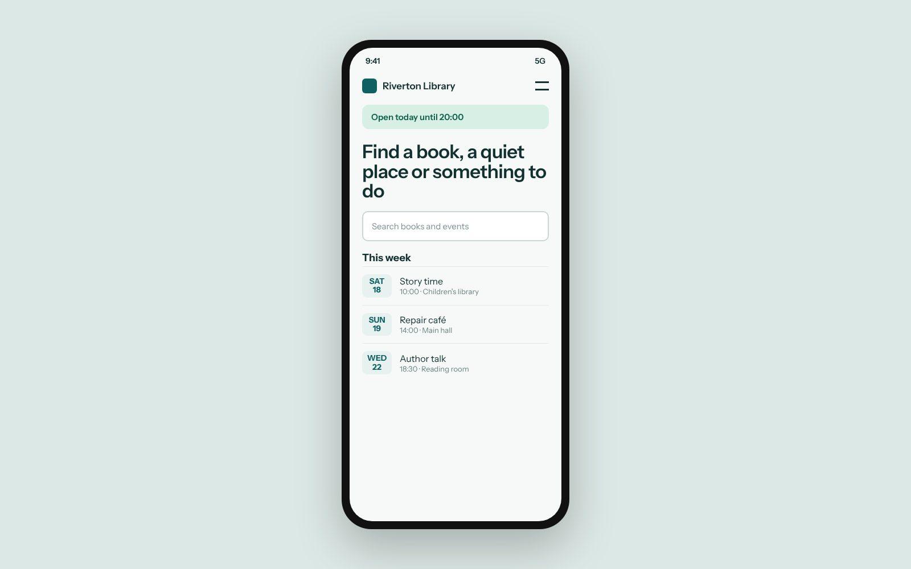

The library’s old website had grown for ten years without a plan. It had more than 900 pages, three different menus and a search that rarely found anything. Staff answered the same questions on the phone every day: when are you open, what is on this week, how do I renew a book.
We started by listening. Over four weeks we interviewed staff, watched visitors use the old site at the front desk and read a year of questions sent to the library by email.

In the first month after launch, phone calls about opening hours fell by more than half. Pages load in under a second on a mid-range phone, and the site meets the WCAG 2.2 AA accessibility guidelines.